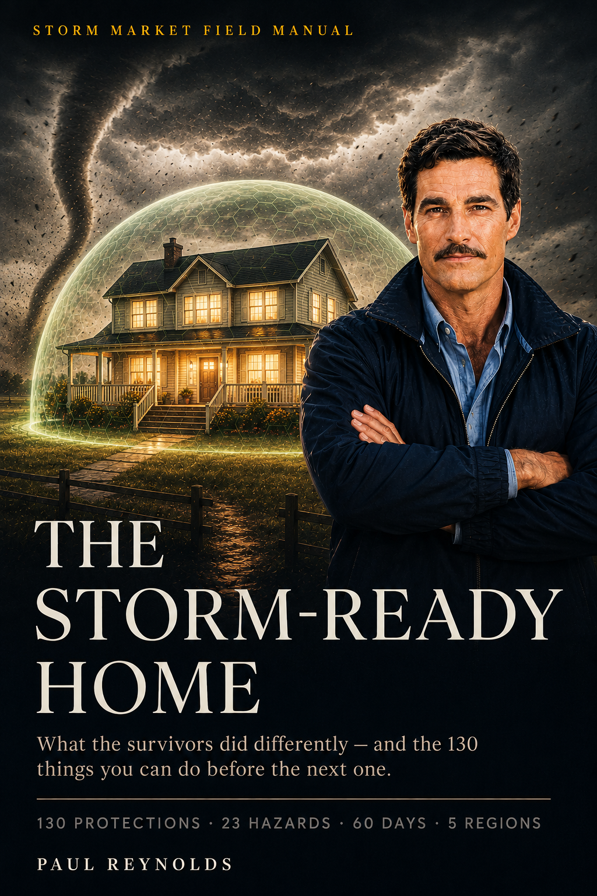

First edition · 2026
This book is general preparedness information for households. It is not medical, legal, engineering, or insurance advice, and it is not a substitute for the instructions of your local emergency officials. In an emergency, call 911 and follow the direction of authorities. Where this book and a local official disagree, the official wins.
It contains no instructions for working on gas lines, service panels, or any energized electrical equipment; no medication dosing; and no structural engineering specifications. Where a job crosses that line, the book says so and tells you what to hire out.
Every dollar figure, statistic, and hazard statement in this book carries a source. Figures from federal agencies are cited to the issuing document and the date it was retrieved. Where a number could not be sourced to a primary document, it was removed rather than estimated.
Photographs, maps, and datasets reproduced here are works of the United States Government and are in the public domain under 17 U.S.C. § 105, or are original diagrams prepared for this book. Agency sources are credited on the Credits page. No agency of the United States Government has endorsed, reviewed, or is affiliated with this book. No agency emblem, seal, or logo appears in it.
Prices are 2026 United States retail, captured on the date shown with each figure. They will drift. Treat them as order-of-magnitude, not quotes.
Every chapter in this book applies to you. Chicago needs the tornado chapter and the blizzard chapter and the extreme heat chapter and the grid chapter. Your region does not decide what you read — it decides what you do first.
Find yourself below and start with that list of ten. Then work the sixty-day sequence on page 271, which orders the rest.
Quake West — CA · OR · WA · AK · HI · NV · UT · MO bootheel (New Madrid) · SC lowcountry. Start with 83 anchoring, 84 gas shutoff, 1 water store, 43 light and shoes at the bedside, 57 trauma kit. Full list on page 32.
You want the place with the most walls between you and the outside, on the lowest floor, with nothing above it that can fall through. Usually a basement corner away from the windows, or an interior bathroom, closet, or hallway.
An interior room is not a shelter. It buys walls, not survival in a violent tornado. In a mobile or manufactured home no room qualifies — your safe room is elsewhere, and you leave on the watch, not the warning. See Protection 24.
A double garage door is sixteen feet of unsupported sheet metal, and it is the weakest large surface on most American houses. When it fails inward the wind does not simply enter the garage. It fills the house, pushes up on the roof deck from underneath, and turns a wind event into a structural one — the sequence behind many roofs described as having been "torn off."
Bracing does not upgrade an unrated door to a rated one, and earns no credit on its own — only a rated door verified at inspection does. It also does nothing for the pedestrian door into the house, which is the path the water takes.
The tornado that crossed Joplin killed 161 people and remains the deadliest single tornado in the United States since modern record-keeping began. The National Weather Service's service assessment of the event found something uncomfortable: most residents did not immediately take shelter when the sirens sounded. They sought confirmation first — from a window, a neighbor, a television. The assessment attributed this to a widespread and rational-seeming habit of treating sirens as one input among several, formed by years of warnings that came to nothing.
The lesson of Joplin is not that people were careless. It is that the decision to shelter was being made during the event, by people gathering evidence, when it should have been made months earlier and reduced to a reflex.
That is what this chapter builds: a decision already made. Where you go, what tells you to go, and what you stop doing the moment it does.
In this chapter — What actually kills, page 120 · Before: Protections 23, 25, 85, 87, 95, page 122 · During: the decision tree, page 126 · After: gas, fire and the search for the rest of your household, page 127.
Federal disaster aid is not insurance and it is not compensation. It is a floor. How close you land to the ceiling is decided almost entirely by what you can prove — and most of that proof has to exist before the event.
Average FEMA Individuals and Households Program award. Congressional Research Service, average award following enactment of the Disaster Recovery Reform Act.
Statutory maximum for housing assistance, with a separate maximum of the same amount for other needs assistance. Federal Register notice, 24 October 2024.
| Also on the record | Figure |
|---|---|
| Share of housing-assistance recipients who received the maximum | 10.8% |
| Share of all recipients earning $30,000 a year or less | 53.6% |
| Average award, homeowners, 2016–2018 | ~$4,200 |
| Average award, renters, 2016–2018 | ~$1,700 |
Source: Congressional Research Service, FEMA Individual Assistance Grants for Disaster Survivors (R48310, IF13127); Federal Register 89 FR, notice of maximum IHP amounts. Retrieved 26 July 2026.
This is not a promise that documentation moves you from three thousand dollars to forty-three thousand. Awards are determined by verified loss, insurance status, and eligibility, and most households will never approach the maximum. What documentation removes is the loss you cannot prove — which is the only part of the gap you control.
The three that cost nothing. Protection 100, the twenty-minute video walkthrough. Protection 96, the document vault. Protection 105, the discipline of photographing damage before you touch anything. Do them this week.
Local lines jam first. Everyone reports to the out-of-area contact, who becomes the switchboard. Text before you call — texts get through congestion that voice calls do not.
The cheapest week in the book, and the one that returns the most money. Nothing here costs anything but an evening. It is placed before the spending weeks on purpose.
| Day | Time | Do this |
|---|---|---|
| 22 | 20 min | Protection 96 — the document vault. Scan or photograph: IDs, deeds, titles, policies, prescriptions, pet records. One copy encrypted in the cloud, one on a drive that leaves the house. |
| 23 | 20 min | Protection 100 — the video walkthrough. Phone in hand, narrate every room. Open drawers and closets. Say what things are and when you bought them. Upload it tonight. |
| 24 | 15 min | Protection 101 — serials and receipts. Photograph the plate on the furnace, water heater, HVAC, and anything over $500. |
| 25 | 30 min | Protection 102 — the policy audit. Find your dwelling limit, your deductible, and whether contents are replacement cost or actual cash value. Write the three numbers on Form 9. |
| 26 | 15 min | Protection 104 — ask for the credit. Call your carrier and ask for their mitigation credit table. It is theirs, it is specific to your county, and they will send it. |
| 27 | 25 min | Protection 103 — the waiting period. Check whether you carry flood coverage. If you do not and you want it, note that most new policies do not take effect for thirty days. Starting today matters. |
| 28 | 40 min | Weekend — Form 4. Fill the Household Communication Plan with everyone in the room. Then text the out-of-area contact and tell them they have the job. |
Do days 22 and 23. Forty minutes together, and they are the two things every adjuster and every aid application will ask you for at the worst possible moment.
Every entry verified July 2026. Agencies reorganize and URLs move; the buyer edition of this directory is reissued annually and is free to you for the life of the book.
How to use this. Sign up for the county alert system today — it is the one in this list that will actually wake you up, and it is the one almost nobody has done. Then call the insurance department line before you need it, not after.